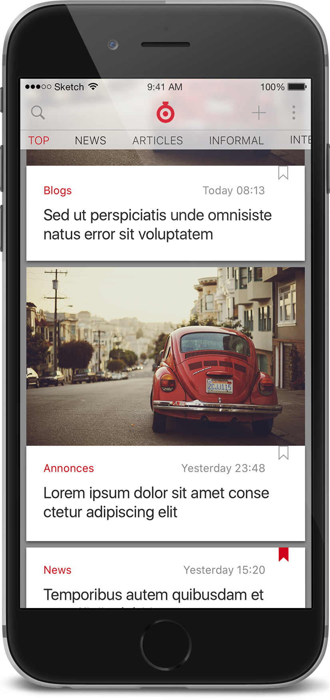

Interaction design
Mobile app for Ukrainian online newspaper Timer. A bit improved and filled in English.

Format: iOS app
Challenge: Pack feed, sections, and "I have news" feature into iOS mobile app.
Result: Here is my version (i.e. it's different from the app launched). I preserved comments (as they're featured on tne website) and violated iOS guideline in the honor of space.

Headlines: Timer headlines indeed organized by form instead of topic. It is not my improvement.
Cute or compact? Popular or chronological? My answer: let user decide. It's really annoing to spend time trying to make Facebook show stuff just as it posted, not in the magical order it uses. In settings presented below you may turn this view even into a "table" of titles (with compact material size and pictures turned off).
Bookmarks, comments and my news (not presented here) are also some selections of materials. With the tab bar (recomended by iOS guideline) access to these sections would be faster. So why I allowed myself not just to create an extra click but also to add a "heavy" design on the menu? In fact, all these sections are rarely visited: mostly people don't turn back to materials they already read. (May be because most of the texts are shourt enouth to read them at one stretch).
Comments are not featured in the real app. People comment and especially - interact with each other in comments rarely. I'd make that trade-off: let people access at least the list of materials they commented (signed up for updates). It doesn't reqire notifications, but if one day we'll decide to add them - in current structure they supposed to be another item of the menu.
Second screen represents Material size > Comact.
Yes, I like settings to look pretty boring. Some comments:
This feature encourages users to send something you witnessed to editorial staff. In Russian it called "suggest a piece of news" (what takes just two words). Editorial staff says they really get a lot out of it and insisted on quick access to the feature. So, the + on the main screen leads here.